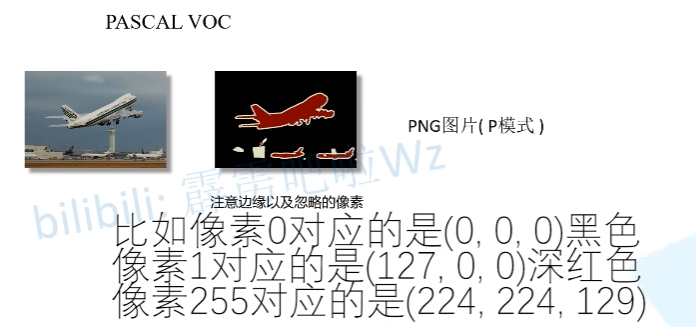
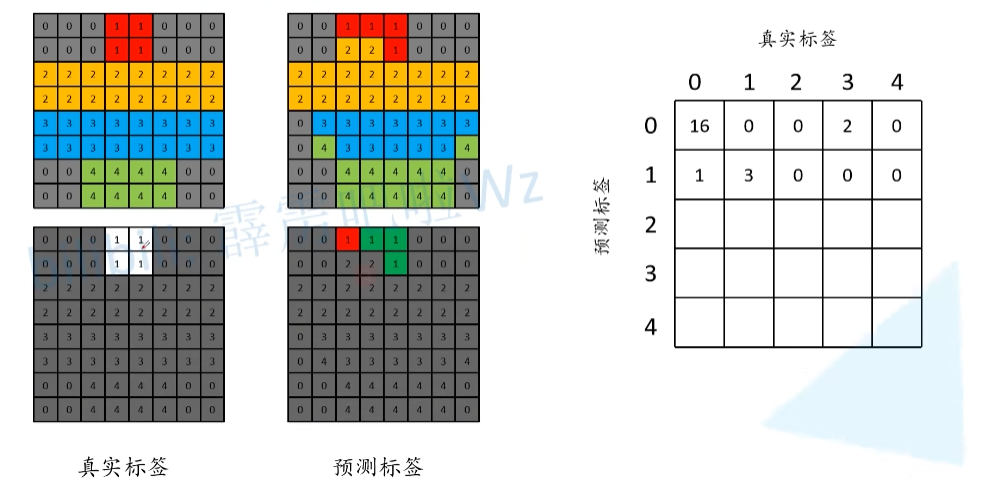

无标题
语义分割
学习视频
一、前言
目标：
- [x] 什么是语义分割
- [x] 暂定的学习规划
- [x] 语义分割任务常见数据集格式
- [x] 语义分割得到结果的具体形式
- [x] 语义分割常见评价标准
- [x] 语义分割标注工具
1. 常见分割任务
语义分割（FCN）：对每一个像素进行分类
实例分割（Mask R-CNN）：针对同一个类别的不同目标也采用不同颜色进行分类，结果更精细，只关注目标背景
全景分割（Panoptic FPN）语义 + 实例 + 背景划分
精细程度逐级递增

2. pytorch 官方提供的语义分割网络

3. 语义分割任务常见数据集格式
Pascal VOC
语义分割中提供的是png图片（记录每个像素所属的一个类别信息），这个png图片使用调色板的模式进行存储。
图片（第二张图片）实际是一个一通道的图片（黑白图片），但看到的确实彩色的。
用 python 的 Pillow 去读取 png 图片的话，默认读取的是调色板的模式（P模式），通道数为1（单通道）。
但是读取图片进行训练的时候只需要关注每个像素所属的类别索引即可
目标的边缘都会有一个特殊的颜色进行分割，或者图片中的一些特殊去也会用这个颜色进行填充，而这些位置对应的像素值是255万。在训练过程中，会抛弃像素值为255万的地方，因为这些地方并不好严格确定其所属类型。
除此之外，有一些不好区分类别的地方，也可用这个颜色进行填充。例如图中的长方形区域，在原图中是有一个飞机的尾翼部分的，但是并不好进行分割，故直接使用了像素值为255的数值进行填充，填充遮蔽之后再训练网络的时候就不会去计算这部分的损失。

像素值指的是数字图像的基本单位像素所具有的数值信息。它是用来定义图像的亮度或颜色等级的，对彩色图像而言，每个像素通常包含了红、绿、蓝三个颜色通道的数值信息，这三个颜色通道的数值组合决定了该像素呈现的颜色。
像素值是三维数值

MS COCO
MS COCO数据集介绍以及pycocotools简单使用_coco数据集最多一张图有多少个instance-CSDN博客
这篇论文是关于读取每张图片的分割信息的部分，如何读取并得到每个图像所对应的标签图片
针对图像中的每一个目标都给出了一个多边形的一个坐标形式（x坐标.y坐标，两个一组一个坐标点，点连成线，得到目标），将图像中的所有目标绘制出来，即可得到右下角抽离出来的训练图案。
这个结果图片与 Pascal 的 png 图片结果是一样的，不过并没有标注边缘信息，因此使用MS COCO数据集就需要自己将多边形信息解码成png图片（期望的标签图片）。计算损失时，就是拿预测的每个像素对应的类别与真实标签的每个类型进行对比计算。
另外，记录的多边形信息除可用于语义分割外，还可以用于进行实例分割，因这样已经记录了每个目标的，是能够将每个目标都区分出来的

4. 语义分割得到结果的具体形式
单通道图片
- 以下是单通道 + 调色板，利用 PyTorch 官方的 FCN 网络预测的结果（背景位置像素值为0， 飞机位置像素值为1，人位置的像素值为15）。
如果直接以灰度图片显示的话，看到的图片是一幅黑色的（因为不同目标的像素值实际都很小—-1和15），肉眼根本看不出区别，加上调色板，可以让每个像素对应一个彩色，方便可视化我们的预测结果。
- 每个像素的数值对应类别索引

5. 常见语义分割评价指标
Pixel Accuracy（Global Acc）
- 分子是预测标签图像中所有预测正确的像素个数的总和
- 分母是图片的总像素个数
mean Acc
将每个类别的 Acc 计算出来，然后再进行一个求和，然后再取平均
mean IoU
计算每一个类别的 IoU，然后再对每个类别 IoU 的累和求平均
其实和目标检测 IoU 理论上是一样的，都是两个目标面积的交集比上他们面积的并集
- 假设绿色的圆圈对应的是真实的标签，蓝色的圆圈对应的是预测的标签，那么n~ii~ 对应的是这两个圈重合的部分，即预测正确的部分
- t~i~ 对应的是类别 i 的总个数，即绿色圆圈部分的面积，而
 对应的是预测标签中所有预测为类别 i 一个像素总个数，即蓝色圆圈部分的面积，由于计算的时候中间部分计算了两次，所以还需要减去一次中间部分 n~ii~
对应的是预测标签中所有预测为类别 i 一个像素总个数，即蓝色圆圈部分的面积，由于计算的时候中间部分计算了两次，所以还需要减去一次中间部分 n~ii~
论文中最常见的是 mean IoU
n~ii~ ：针对类别i，预测正确的总像素个数

Pytorch 官方的一个计算方法——通过构建一个混淆矩阵来进行计算

- Global ACC
- 为了方便理解，现将所有标注为0的位置设置为白色，非0标注的位置全部设置为灰色，这样把所有预测标签为0的结果全部提取出来了，
- 然后预测正确的位置用绿色进行表示，预测错误的位置用红色表示
- 右图中16是预测为0的正确像素总是（即绿色像素总个数），2为预测为0的预测错误的像素总个数（即红色像素总个数），错误像素原本对应的索引是3

- 同样在预测标签当中，将所有预测为1的结果全部提取出来，预测正确的用绿色表示，预测错误的用红色表示

- 以此类推，可以分别预测出类别2，类别3，类别4对应的参数
- 最终得到一个混淆矩阵
- 分子是预测标签图像中所有预测正确的像素个数的总和
- 分母是图片的总像素个数
- 对角线对应的全部是预测正确的像素个数，即分子是混淆矩阵对角线上的数字之和
- 可以将混淆矩阵的所有个数相加得到分母，或者直接使用标签（8行8列8*8=64）得到像素值
- mean ACC

- mean IoU


6. 标注工具
- Labelme

- EISeg —- 百度开源的深度学习框架

开源仓库：PaddleSeg/EISeg at release/2.10 · PaddlePaddle/PaddleSeg
二、转置卷积（Transposed Convolution）
[1603.07285] A guide to convolution arithmetic for deep learning
1. 介绍
在语义分割和对抗神经网络 gan 当中的作用：采样（upsampling）
左侧的图是一个传统的卷积，输入的是高宽为 4 4 的特征层，克隆大小是 3 3的，padding = 0， strides = 1，通过卷积之后，得到的输出特征层的高宽是 2 * 2 的
右边的图是转置卷积，对于输入的是 2 2 的特征层，同时在四周填充一些零元素，填充之后同样使用 3 3 的卷积核来进行卷积处理，通过转置卷积之后，发现输入特征层大小是 2 2，输出特征层大小变成了 4 4，输出变大了，这也是转置卷积最常用的一种情况，就是伤采样。
转置卷积不是卷积的逆运算
deconvolution卷积逆运算的名称，但同时在某些地方也被认为是转置卷积，这很容易混淆，所以一般不用这个做称呼
转置卷积只是将特征层的大小还原回卷积之前的大小，但其数值是和输入特征层的数值不一样，所以转置卷积并不算一个卷积逆运算的过程
转置卷积也是卷积

第一次听到转置卷积是在李宏毅老师课上，印象深刻的一句话：转置卷积就是卷积。对了，补充一下，把卷积核矩阵转置乘原图矩阵就是转置卷积，因此卷积运算的反向传播就是通过转置卷积实现的。以及转置卷积在生成任务中如果卷积核大小为3，步长为2，会有非常明显的棋盘效应，因此更推荐使用最临近插值或双线性插值后再接一个卷积来取代转置卷积。